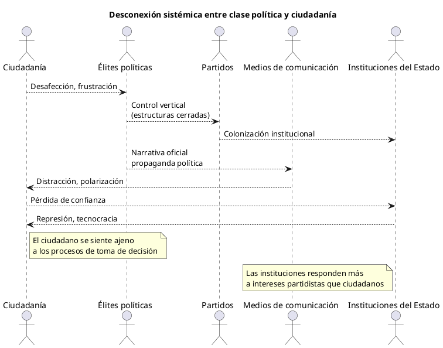
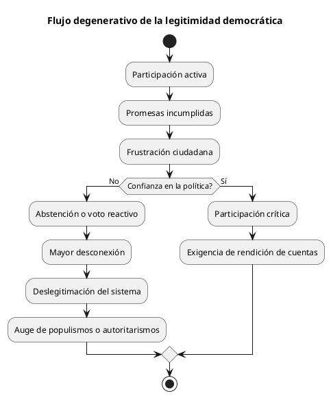

Abismo creciente: desafección ciudadana y desconexión de la clase
Abismo creciente: desafección ciudadana y desconexión de la clase política
La democracia representativa occidental atraviesa una de sus peores crisis de legitimidad desde la Segunda Guerra Mundial. España no es la excepción. En las últimas décadas, la ciudadanía ha experimentado un proceso de desafección progresiva hacia sus representantes políticos, que hoy se perciben como una clase aislada, autorreferencial y desconectada de los problemas reales de la gente.
Este fenómeno, lejos de ser una anécdota pasajera, erosiona las bases del contrato social. Las promesas electorales incumplidas, la corrupción endémica, los privilegios blindados, y una narrativa política centrada en la confrontación y no en la resolución, han consolidado una percepción ciudadana clara: los políticos no nos representan.
De representantes a casta: génesis de una élite política desconectada
El artículo 1.2 de la Constitución Española declara que:
"La soberanía nacional reside en el pueblo español, del que emanan los poderes del Estado."
Sin embargo, la experiencia cotidiana contradice esta premisa. En lugar de ser servidores públicos, muchos políticos se han convertido en una élite profesionalizada, alejada del tejido social que dicen representar.
Factores clave en esta desconexión:
- Carreras políticas endogámicas Muchos políticos acceden a cargos sin haber trabajado en el sector privado, sin experiencia laboral relevante, ni contacto con realidades ajenas al partido.
- Captura partidista del Estado Las instituciones se colonizan con afines. Se premia la lealtad interna por encima de la competencia o el mérito.
- Blindaje y privilegios Salarios, pensiones, dietas, aforamientos, coches oficiales. El contraste con la precariedad ciudadana es obsceno.
- Rotura del vínculo emocional El lenguaje tecnocrático, vacío o excesivamente ideologizado aleja aún más al ciudadano medio de la acción política.
Síntomas de una democracia enferma
1. Bajísima confianza institucional
- El CIS (Centro de Investigaciones Sociológicas) lleva años reflejando que los políticos son percibidos como uno de los principales problemas del país.
- La justicia y el parlamento arrastran índices de credibilidad inferiores al 30%.
2. Abstención y voto emocional
- Aumento del voto de castigo, antisistema o directamente abstención total.
- El voto se convierte en un acto de rabia o resignación, no de confianza.
3. Reducción del debate al espectáculo
- Los platós sustituyen al parlamento.
- Se premia el tuit incendiario frente al argumento complejo.
- Los políticos se comunican entre sí, pero no con la ciudadanía.
4. Déficit democrático
- Las decisiones importantes se negocian en despachos cerrados.
- El ciudadano es consultado cada cuatro años, pero ignorado el resto del tiempo.
Causas estructurales
La desconexión entre política y ciudadanía no es solo culpa de "malos políticos". Tiene raíces estructurales más profundas:
- Diseño institucional opaco
- Falta de rendición de cuentas real.
- Ausencia de mecanismos de democracia directa o deliberativa.
- Sistema electoral cerrado
- Listas cerradas y bloqueadas impiden elegir representantes concretos.
- Las cúpulas partidistas deciden quién entra y quién no.
- Medios de comunicación dependientes
- Relaciones promíscuas entre partidos, gobiernos y grandes grupos mediáticos.
- Control del discurso y cierre de ventanas a debates alternativos.
- Ciudadanía desmovilizada y precarizada
- Falta de educación política.
- Fatiga democrática tras décadas de promesas incumplidas.
Consecuencias: erosión de la legitimidad democrática
Cuando la representación se vuelve simbólica y no sustantiva, la legitimidad entra en crisis. El ciudadano ya no cree en las instituciones, no espera nada del proceso político, y busca salidas externas:
- Tecnocracia: “que gobiernen los expertos”.
- Populismo: “que gobierne alguien que hable como yo”.
- Cinismo cívico: “todos son iguales”, “la política es una farsa”.
Estas actitudes, aunque comprensibles, favorecen la desmovilización y abren la puerta a opciones autoritarias o antipluralistas.
¿Hacia dónde vamos?
Dos escenarios posibles:
- Reforma regeneradora
- Apertura del sistema político.
- Escucha activa y mecanismos de participación ciudadana.
- Educación política y cívica como prioridad nacional.
- Cronificación del desencanto
- Normalización de la baja participación.
- Aumento de los extremos y deterioro institucional.
- Consolidación de una democracia de baja intensidad, formal pero vacía.
Conclusión
La desafección política no es un fenómeno marginal ni pasajero. Es la expresión de una fractura creciente entre la legitimidad formal del poder y su legitimidad percibida por la ciudadanía. Si la política quiere sobrevivir como herramienta de transformación social y no como teatro vacío, debe reconstruir sus lazos con el pueblo. No se trata de mejorar la comunicación, sino de reformar la estructura misma del poder.
Mientras tanto, muchos ciudadanos seguirán haciéndose la pregunta más incómoda de todas: ¿de verdad vivimos en una democracia?
Apéndices
Evolución histórica de la abstención en elecciones generales en España
| Año | Participación (%) | Abstención (%) |
|---|---|---|
| 1982 | 79.97 | 20.03 |
| 1986 | 70.46 | 29.54 |
| 1989 | 69.78 | 30.22 |
| 1993 | 76.44 | 23.56 |
| 1996 | 77.38 | 22.62 |
| 2000 | 68.71 | 31.29 |
| 2004 | 75.66 | 24.34 |
| 2008 | 73.85 | 26.15 |
| 2011 | 68.94 | 31.06 |
| 2015 | 69.67 | 30.33 |
| 2016 | 66.48 | 33.52 |
| 2019A | 71.76 | 28.24 |
| 2019N | 66.23 | 33.77 |
| 2023 | 70.40 | 29.60 |
Gráfico de relaciones en PlantUML: desconexión sistémica

Gráfico PlantUML: flujo degenerativo de legitimidad democrática

Referencias
- Innerarity, Daniel. La democracia del conocimiento
- Marina Garcés. Nueva ilustración radical
- Manuel Castells. Redes de indignación y esperanza
- Informe del CIS sobre confianza institucional, 2023
- Fundación Hay Derecho: Índice de calidad institucional